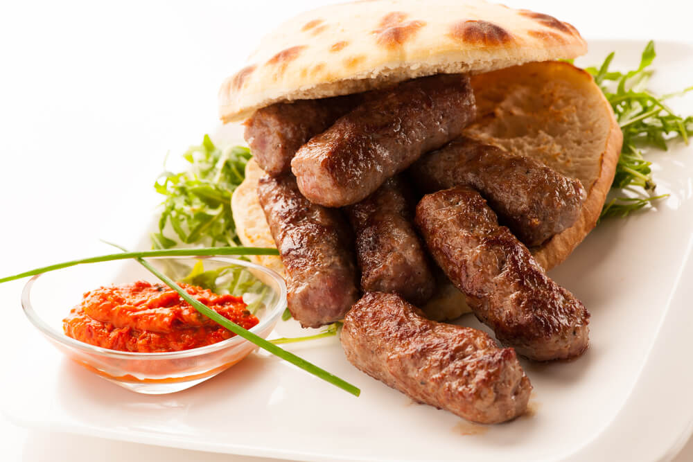
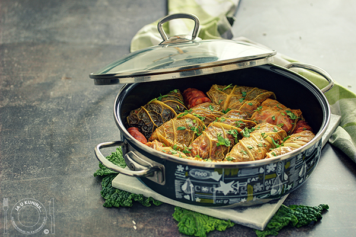
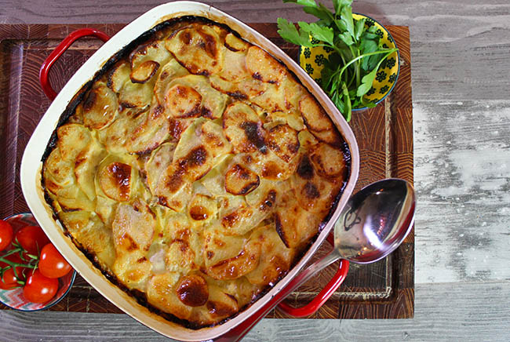

Dobrodošli u restoran "Ukusi sa salaša" – domaća jela i tradicionalna kuhinja
Probajte najbolja domaća jela u prijatnom ambijentu, pripremljena po receptima tradicionalne kuhinje.
Naša preporuka – specijaliteti domaće kuhinje

Ćevapi na domaći način

Sarma sa kajmakom

Musaka sa krompirom
Zašto izabrati naš restoran i uživati u prijatnoj atmosferi?
Naš restoran nije samo mesto za obrok, već i mesto gde se okupljaju porodice i prijatelji. Svakog dana spremamo jela sa posebnom pažnjom, koristeći domaće sastojke i tradicionalne recepte koji se prenose generacijama.
Pored klasične ponude, nudimo i sezonske specijalitete i dnevne menije. Naša misija je da svaki gost ode zadovoljan, punog stomaka i lepih uspomena.
Naš restoran "Ukusi sa salaša" poznat je po sezonskoj ponudi i specijalitetima koji odražavaju duh srpske domaće kuhinje.